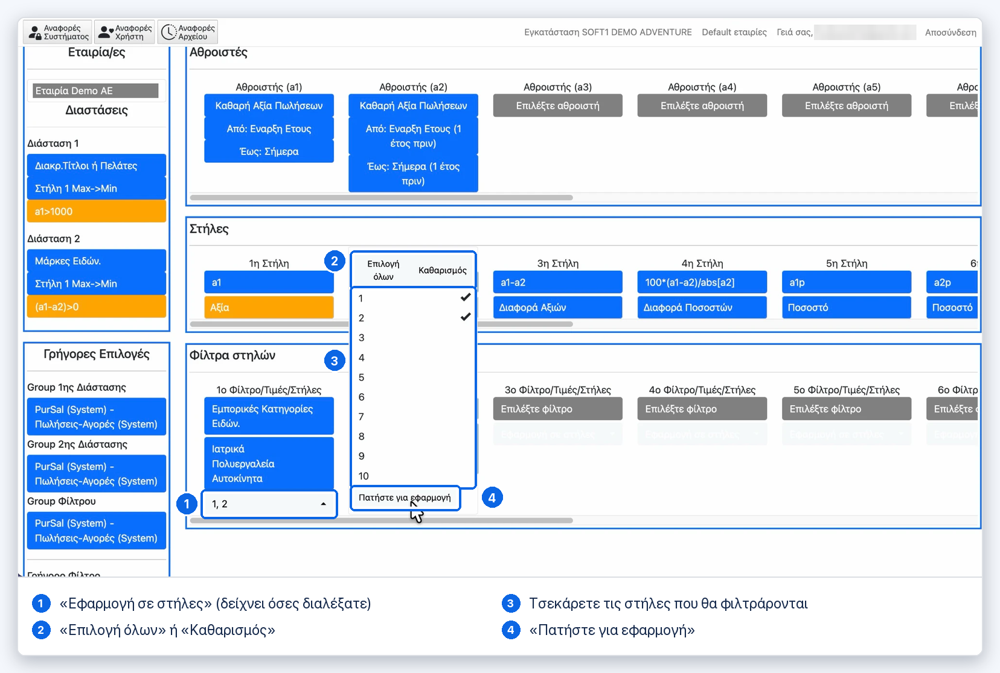
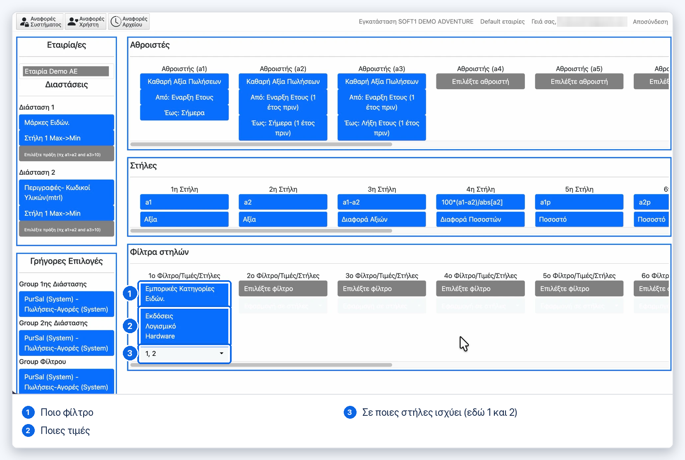

Φίλτρα ανά στήλη
Κάθε φίλτρο το εφαρμόζετε μόνο στις στήλες που θέλετε. Έτσι στην ίδια αναφορά συγκρίνετε, για παράδειγμα, τις συνολικές πωλήσεις ενός πωλητή με τις πωλήσεις μιας συγκεκριμένης κατηγορίας.
Τι κάνει#
Μια αναφορά έχει έως 10 φίλτρα στηλών. Για καθένα ορίζετε τρία πράγματα:
- Ποιο φίλτρο: π.χ. «Ομάδες Ειδών».
- Ποιες τιμές: π.χ. δύο συγκεκριμένες ομάδες.
- Σε ποιες στήλες: π.χ. μόνο στη 2η και στην 4η.
Οι στήλες που δεν διαλέξατε δεν επηρεάζονται. Αυτό είναι το «ανεξάρτητο φιλτράρισμα»: κάθε στήλη μπορεί να έχει τα δικά της φίλτρα.
Φίλτρα εξαίρεσης: στη λίστα φίλτρων, όσα το όνομά τους αρχίζει από X_ δουλεύουν ανάποδα. Οι τιμές που διαλέγετε εξαιρούνται από τον υπολογισμό, αντί να κρατηθούν μόνο αυτές.

Πότε το χρησιμοποιώ#
- Σύνολο και μέρος δίπλα δίπλα: στήλη 1 = όλες οι πωλήσεις του πωλητή, στήλη 2 = πωλήσεις μόνο της ομάδας ειδών «Χ». Βλέπετε αμέσως τι ποσοστό του τζίρου του είναι η «Χ».
- Πωλήσεις χωρίς συγκεκριμένα είδη: με ένα φίλτρο X_ στις ομάδες ειδών, η στήλη δείχνει τις πωλήσεις χωρίς αυτές τις ομάδες.
- Δύο αγορές στην ίδια αναφορά: στήλη 1 με φίλτρο μία περιοχή, στήλη 2 με φίλτρο άλλη περιοχή.
Βήματα#
- Στις ρυθμίσεις, πηγαίνετε στην ενότητα Φίλτρα στηλών. Βλέπετε 10 θέσεις: 1ο Φίλτρο/Τιμές/Στήλες έως 10ο Φίλτρο/Τιμές/Στήλες.
- Στην 1η θέση πατήστε Επιλέξτε φίλτρο. Στο παράθυρο, με στήλες Περιγραφή Διάστασης, Κωδικός, Κατηγορία, γράψτε στην Αναζήτηση και πατήστε Επιλογή δίπλα στο φίλτρο που θέλετε.
-
Πατήστε Επιλέξτε τιμές φίλτρου. Τσεκάρετε τις τιμές που θέλετε και πατήστε Αποδοχή. Με Καθαρισμός ξετσεκάρονται όλες.

Παράθυρο τιμών φίλτρου με τσεκαρισμένες 2-3 τιμές και το «Αποδοχή» -
Ανοίξτε το Εφαρμογή σε στήλες και διαλέξτε τις στήλες (1-10). Με Επιλογή όλων διαλέγετε όλες. Πατήστε Πατήστε για εφαρμογή.

Ανοιχτό «Εφαρμογή σε στήλες» με επιλεγμένες στήλες -
Πατήστε Εμφάνιση Αναφοράς.
- Για να βγάλετε ένα φίλτρο, ανοίξτε το Επιλέξτε φίλτρο και πατήστε Καθαρισμός φίλτρου.

Το Γρήγορο Φίλτρο#
Στην ενότητα Γρήγορες Επιλογές των ρυθμίσεων υπάρχει το Γρήγορο Φίλτρο. Εκεί ορίζετε τύπο φίλτρου (Επιλέξτε τύπο φίλτρου) και στήλες (Εφαρμογή σε στήλες), χωρίς τιμή. Την τιμή τη διαλέγετε κάθε φορά που τρέχετε την αναφορά, από τις Γρήγορες επιλογές. Π.χ. μια αναφορά «Καρτέλα πελάτη» που ρωτά κάθε φορά ποιον πελάτη.
Συμβουλές και συχνά λάθη#
- Ξεχάσατε το «Εφαρμογή σε στήλες»; Χωρίς επιλεγμένες στήλες, το φίλτρο δεν επηρεάζει καμία.
- Πολλά φίλτρα στην ίδια στήλη ισχύουν όλα μαζί (π.χ. ομάδα ειδών Χ και περιοχή Υ).
- Οι τιμές φίλτρου που βλέπετε αφορούν τις εταιρείες που έχετε επιλέξει στην αναφορά.
- Η επικεφαλίδα κάθε στήλης γράφει ποια φίλτρα την επηρεάζουν. Αν δεν σας βγαίνουν τα νούμερα, κοιτάξτε πρώτα εκεί.
- Φίλτρα που δεν βάλατε εσείς: ο διαχειριστής μπορεί να έχει ορίσει αυτόματα φίλτρα (π.χ. μόνο ο πωλητής σας). Αυτά ισχύουν πάντα.